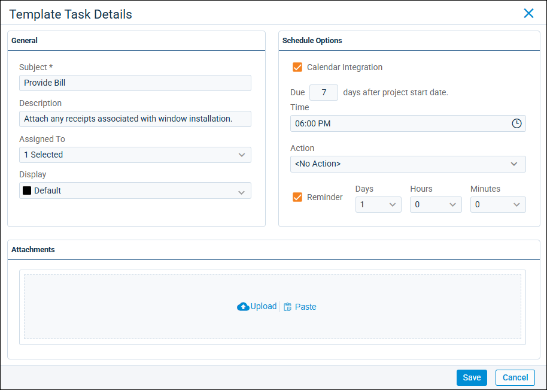

Source: https://rmxhelp.rentmanager.com/Topics/Express/CSH/Workflow-Project-Task-Details.htm
Workflow Task Details (Pop-Up)
Tasks are one-time actions that you create to help you maintain and keep track your busy schedule directly from Rent Manager. In workflow templates and projects, tasks are steps within the stages that make up the template or project. Use tasks rather than issues when the work involved in the step is more simple or requires an action to be taken within Rent Manager (e.g., writing a letter or entering an invoice).
Related Privileges
| Group | Privilege | Column |
|---|---|---|
| Setup | Tasks | Add |
| Service Manager | Workflow Projects | View, Edit |
| Workflow Templates | View, Edit |
For more information, refer to Control User Access.
To view a workflow task's details, do one of the following:
| Option | Description |
|---|---|
|
Workflow Projects |
Go to Then, from the workflow project's details page, click |
|
Workflow Templates |
Go to Then, from the workflow template's details page, click |

General
In the General tile, the following fields are available.
| Field | Description |
|---|---|
|
Assigned To |
The user(s) that are responsible for completing the task. The task displays on their calendars in Rent Manager and, if enabled in the Schedule Options tile, they are sent alerts reminding them to complete the task. |
|
Description |
An explanation of the task's purpose or requirements for completion. |
|
Display |
The color of the Subject when the task displays in lists, on the calendar, and/or in tiles. |
|
Subject |
The title of the task. This also displays in the calendar and on the Tasks dashboard tile. |
Schedule Options
In the Schedule Options tile, the following fields are available.
| Field | Description |
|---|---|
|
Actions |
The action that needs to be taken to complete this task. The options that display are from a predetermined list of actions that can be performed in Rent Manager. When you click the task from anywhere in Rent Manager, the appropriate page opens so you can perform the action. For example, if the Make Deposit action is selected, when you click the task, it opens the Make Deposit page, where you can deposit payments. |
|
Calendar Integration |
If checked, allows the task to be synced with an external calendar. This option does not impact whether the task displays on the Calendar page in Rent Manager. This option displays only when adding a task to a workflow template. Related Preferences This option displays only if the Integrate Appointments and Tasks with external calendar applications option is enabled in system preferences. For more information, refer to Calendar Integration (System Preferences) Additionally, to receive email alerts regarding these tasks to your email address, you must have an Alternate Email entered in your personal preferences. For more information, refer to Calendar Integration (Personal Preferences). |
|
Due Date |
The date and time by which the task must be completed. This option displays only when adding a task to a workflow project. |
|
Due x days after project start date |
The number of days after the project Start Date that the task must be completed. For example, if 3 is entered, and a project's Start Date is 1/1/2026, the task is due on 1/4/2026. Enter 0 to have the task due the same day as the project's Start Date. This option displays only when adding a task to a workflow template. |
|
Time |
The time of day by which the task must be completed. This option displays only when adding a task to a workflow template. |
|
Reminder |
If checked, enables a reminder for the task to trigger a set amount of time prior to the day the task is due. Enter one or more of the three provided increments (Days, Hours, and Minutes) to determine when the reminder occurs. For example selecting 3 Days schedules a single reminder for that amount of time before the Due Date and time of the task. |
Attachments
In the Attachments tile, files uploaded from your computer to the task display. When a workflow project is generated from the template, the tasks created automatically include the uploaded file(s). Click  Upload to browse your computer for a file, or drag and drop a file into the upload box to attach to the task. Files copied within Rent Manager Express using
Upload to browse your computer for a file, or drag and drop a file into the upload box to attach to the task. Files copied within Rent Manager Express using  can be added here by selecting
can be added here by selecting  Paste.
Paste.